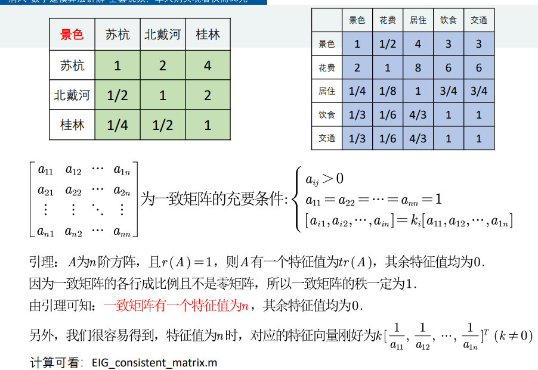

数学建模模型小结
层次分析法
层次分析法步骤
- 评价类问题可以通过打分解决
- 根据权重表格计算得分
问题：评价目标 可选方案 评价的准则或指标
权重

通过查阅资料获得权重
一致矩阵（查阅资料得出）
一致性检验的步骤


特征向量也就是第一行的元素
lamda（max):
最大特征值与n相差越大越不一致
计算权重的方法
(…略,可通过代码得出)
Topsis
要素：
评价对象
评价指标
引入
简单地使用排名的权重来描述分数的高低是不可行的
可行的方式
- 构造计算评分的方式：x-min/max-min
条件
- 比较的对象一般要远大于两个
- 比较的指标（对象的属性）不只是一个方面
- 有很多指标不存在理论上的最大值和最小值
正向化处理
将所有的指标转化为极大型称为指标正向化
原因：统一指标的比较次序
极小型指标转换为极大型指标的公式：max-x
标准化处理
目的：消除不同指标量纲的影响，需要对已经正向化的矩阵进行标准化处理
标准化处理的计算公式
得分的计算
计算最大值的距离和最小值的距离，并算出得分
插值算法
这里仅讨论三次样条插值及三次埃尔米特插值
1 | % 分段三次埃尔米特插值 |
1 | %插值预测中间周的水体评价指标 |